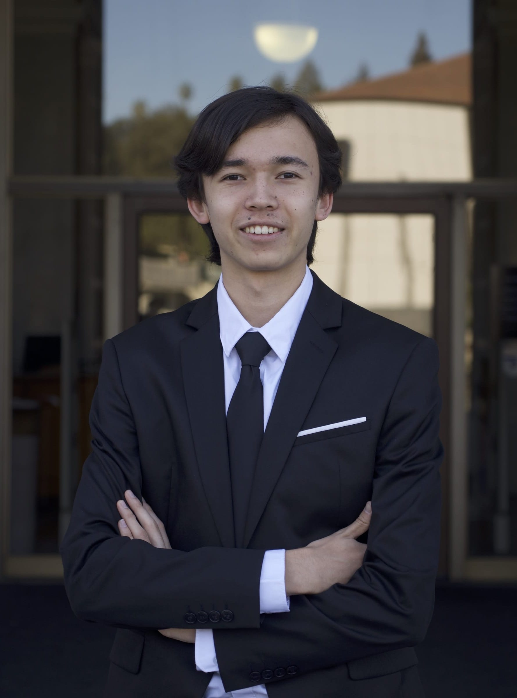
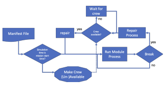
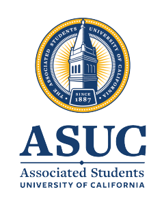

|
I am currently a rising junior at UC Berkeley studying Computer Science. I currently have 5 apps on the Apple App Store used by tens of thousands of people across the world. I enjoy playing tennis, flying drones, and traveling. I can read and write Chinese, and speak some Swedish. At Berkeley, I am the Chief Technology Officer for the ASUC and work on the iOS team developing Berkeley Mobile. I'm also on the team organizing Pinnacle, a competitive collegiate hackathon coming Fall 2021. PGP: F005 397A 88CB B6AA |
 |
{kind=link}
|
I'm interested in the intersection of software and hardware. Please reach out if you'd like to learn more about my projects. |

|
Intern, IBM Research @ Almaden
Summer 2020 Created novel data center monitoring appliance consisting of a ceiling-mounted hardware component and an on-device machine learning model for video frame analysis using PyTorch Designed pipeline for expediting rollout of field-specific chatbots using lexicon generation, an easily augmentable knowledge base, and Watson Assistant |

|
Intern, Advanced Supercomputing Division @ NASA
Summer 2019 Developed Python utility for mission planners to assess viability of new lunar campaign designs Built cross-platform Electron app for Urban Air Mobility project - tied together risk assessment model, genetic algorithm based scheduler, and map overlay visualization |
|
|
|  |
Clemens Rumpf, Oscar Bjorkman, Donovan Mathias IEEE Aerospace Conference, 2020 We assess performance and risk for proposed mission architectures using a new Mission Architecture Risk Assessment (MARA) tool, producing statistics about the availability of components and overall performance of the mission considering potential failures of any of its components. |
|
I participate in robotics competitions, write iPhone applications, attend hackathons as time permits, and look for opportunities to work with cool technology. |
|  |
Chief Technology Officer, ASUC, Spring 2021 - Present
Chief of Staff, OCTO, Fall 2020 - Spring 2021 iOS Developer, Berkeley Mobile, Fall 2019 - Present |
|
Organizer, Pinnacle Collegiate Hackathon, Fall 2019 - Present
Invite only hackathon for the winners of the world's largest 50 collegiate hackathons |